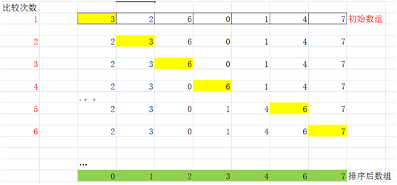
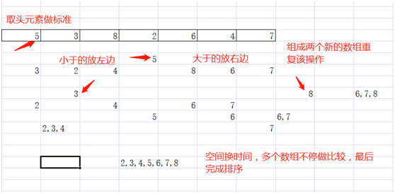

原文连接:https://www.cnblogs.com/yaozhengqi/p/10562358.html
又到了金三银四找工作的时间，相信很多开发者都在找工作或者准备着找工作了。一般应对面试，我们无可厚非的去刷下面试题。对于PHPer来说，除了要熟悉自己所做的项目，还有懂的基本的算法。下面来分享下PHP面试中常会问到的算法：冒泡排序和快速排序
冒泡排序：一一对比排序
基本思想：
重复地走访过要排序的元素列，依次比较两个相邻的元素，如果他们的顺序（如从大到小）错误就把他们交换过来。走访元素的工作是重复地进行直到没有相邻元素需要交换，也就是说该元素已经排序完成。
图解：

1.第一次：拿着数组的第一个元素，分别从第二个元素开始比较，如果前面的元素比后面的元素大，则交换两个元素，得到较大的这个值，继续向后比较，直到数组元素的最后，实现一次冒泡（冒泡一次，就得到当前“剩余”数组的最大值，并且放到数组的“最后面”）
2.第二次开始，还是从第一个元素开始比较，但是只比较到数组长度要-1位置，并且每次的比较次数都依次-1
3.后面重复比较，直到最后没有需要一堆数字需要比较
代码：
1 $arr = array(3,2,6,0,1,4,7);
2 //因为排序需要每次将一个元素与数组的其他元素进行比较，所以需要两层循环来控制
3 //外层循环控制冒泡次数
4 //内存循环比较每次的大小，得到每次的最大值（泡）
5
6 for($i = 0,$length = count($arr);$i < $length;$i++){
7
8 //内存循环
9 for($j = 0;$j < ($length - $i - 1);$j++){
10 //拿着j变量所对应的数组元素，与后面的元素进行比较
11 if($arr[$j] > $arr[$j + 1]){
12 //交换位置
13 $temp = $arr[$j];
14 $arr[$j] = $arr[$j+1];
15 $arr[$j+1] = $temp;
16 }
17 }
18 }总结：
冒泡排序最好的时间复杂度是O(n)，虽然说它不是最优的算法，但是这是我们经常接触到的，面试也会给问到，所以我们一定要懂的基本原理，能理解到，能写的出来
快速排序：用空间换时间
基本思想：
通过一趟排序将要排序的数据分割成独立的两部分，其中一部分的所有数据都比另外一部分的所有数据都要小，然后再按此方法对这两部分数据分别进行快速排序，整个排序过程可以递归进行，以此达到整个数据变成有序序列。
图解：

找到当前数组中的任意一个元素，作为标准，新建两个空数组，遍历整个数组元素，遍历到的元素比当前元素要小，那么放到左边的数组；如果要大，放到另外一个数组中
递归思路
1.递归点：如果两个数组的元素大于1，就需要再进行分解
2.递归出口：数组元素变成1的时候
代码：
1 //待排序数组
2 $arr = array(5,3,8,2,6,4,7);
3 //函数实现快速排序
4 function quick_sort($arr){
5 //判断参数是否是一个数组
6 if(!is_array($arr)) return false;
7
8 //递归出口：数组长度为1就直接返回数组
9 $length = count($arr);
10 if($length <= 1) return $arr;
11
12 //数组元素有多个
13 $left = $right = array();
14 //使用for循环进行遍历，把第一个元素当做比较的对象
15 for($i = 1;$i < $length;$i++){
16 //判断当前元素值的大小
17 if($arr[$i] < $arr[0]){
18 //当前元素小于标准元素，放到左边数组
19 $left[] = $arr[$i];
20 }else{
21 $right[] = $arr[$i];
22 }
23 }
24 //递归调用
25 $left = quick_sort($left);
26 $right = quick_sort($right);
27
28 //将所有的结果合并
29 return array_merge($left,array($arr[0]),$right);
30 }总结：
快速排序在一般的排序的方式中最快的排序方式，以递归为基础，使用空间换时间。在一般的面试中会给问到，要能知道基础原理。
------------------------------------------------------------------------------